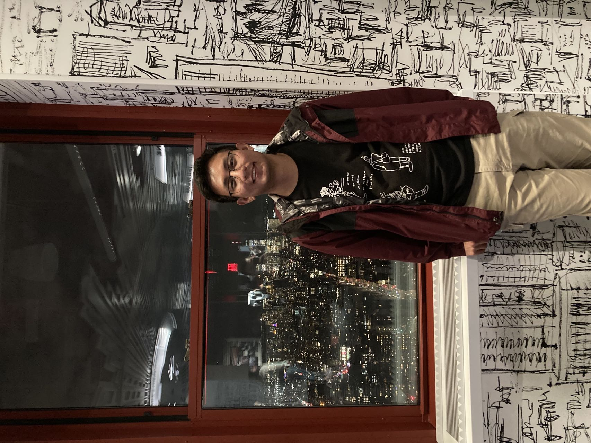
I am a Senior Software Engineer at Zoox in the Bay Area, CA. My current work focuses on vision-language models (VLMs) and vision-language-action models (VLAs) for physical AI.
I received my Ph.D. in Electrical & Computer Engineering from the University of Washington in 2023, advised by Prof. Sumit Roy at FUNLAB. My earlier research spans radar perception and multi-sensor fusion for autonomous driving, combining statistical signal processing with deep learning, as well as learning-based optimization for wireless and edge-computing networks.
Now every appointment I have is a Doctor's appointment.
Selected highlights
|
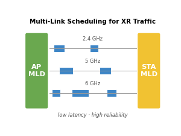 |
Scheduling in IEEE 802.11be Multi-Link Operation for Low Latency and High Reliability
Lyutianyang Zhang, Lu Cao, Dongyu Wei, Xiangyu Gao IEEE Transactions on Green Communications and Networking, 2025 |
|
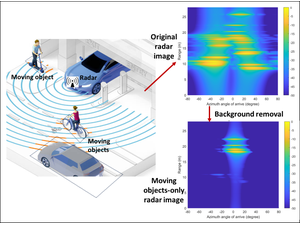 |
Static Background Removal in Vehicular Radar: Filtering in Azimuth-Elevation-Doppler Domain
Xiangyu Gao, Sumit Roy, Lyutianyang Zhang IEEE Sensors Journal, 2024 |
|
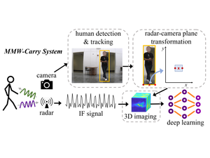 |
MMW-Carry: Enhancing Carry Object Detection through Millimeter-Wave Radar-Camera Fusion
Xiangyu Gao, Youchen Luo, Ali Alansari, Yaping Sun IEEE Sensors Journal, 2024 |
|
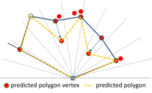 |
Deformable Radar Polygon: A Lightweight and Predictable Occupancy Representation for Short-range Collision Avoidance
Xiangyu Gao, Sihao Ding, Harshavardhan Reddy Dasari IEEE Sensors Journal, 2024 pdf patent |
|
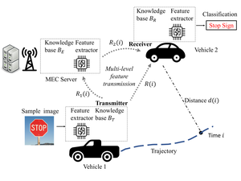 |
Multi-Level Feature Transmission in Dynamic Channels: A Semantic Knowledge Base and Deep Reinforcement Learning-Enabled Approach
Xiangyu Gao, Hao Yin, Yaping Sun, Dongyu Wei, Xiaodong Xu, Hao Chen, Wen Wu, Shuguang Cui IEEE Internet of Things Journal, 2024 code |
|
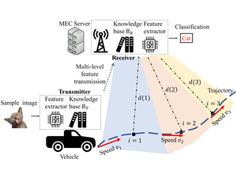 |
Learning for Semantic Knowledge Base-Guided Online Feature Transmission in Dynamic Channels
Xiangyu Gao, Yaping Sun, Dongyu Wei, Xiaodong Xu, Hao Chen, Hao Yin, Shuguang Cui IEEE International Conference on Communications (ICC), 2024 |
|
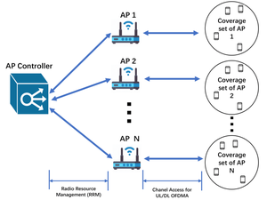 |
IEEE 802.11be Network Throughput Optimization with Multi-Link Operation and AP Controller
Lyutianyang Zhang, Hao Yin, Sumit Roy, Lu Cao, Xiangyu Gao, Vanlin Sathya IEEE Internet of Things Journal, 2024 |
|
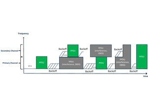 |
Optimized Non-Primary Channel Access Design in IEEE 802.11bn
Dongyu Wei, Lu Cao, Lyutianyang Zhang, Xiangyu Gao, Hao Yin IEEE Global Communications Conference (Globecom), 2024 |
|
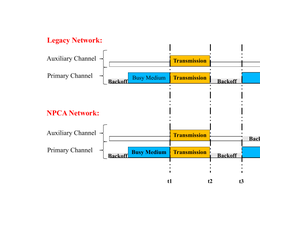 |
Non-Primary Channel Access in IEEE 802.11 UHR: Comprehensive Analysis and Evaluation
Dongyu Wei, Lu Cao, Xiangyu Gao, Hao Yin IEEE 100th Vehicular Technology Conference (VTC2024-Fall), 2024 |
|
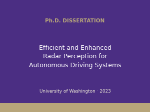 |
Efficient and Enhanced Radar Perception for Autonomous Driving Systems
Xiangyu Gao Ph.D. Dissertation, University of Washington, 2023 |
|
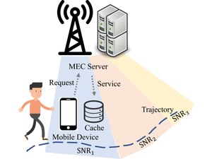 |
Joint Computing, Pushing, and Caching Optimization for Mobile Edge Computing Networks via Soft Actor-Critic Learning
Xiangyu Gao, Yaping Sun, Hao Chen, Xiaodong Xu, Shuguang Cui IEEE Internet of Things Journal, 2023 pdf code |
|
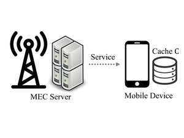 |
Soft Actor-Critic Learning-Based Joint Computing, Pushing, and Caching Framework in MEC Networks
Xiangyu Gao, Yaping Sun, Hao Chen, Xiaodong Xu, Shuguang Cui IEEE Global Communications Conference (Globecom), 2023 |
|
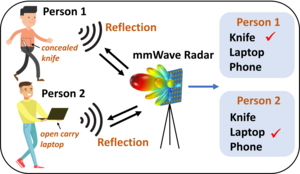 |
Learning to Detect Open Carry and Concealed Object with 77GHz Radar
Xiangyu Gao, Hui Liu, Sumit Roy, Guanbin Xing, Ali Alansari, Youchen Luo IEEE Journal of Selected Topics in Signal Processing, 2022 pdf code |
|
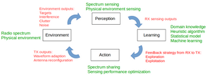 |
Cognition in Automotive Radars
Sian Jin, Xiangyu Gao, Sumit Roy Next Generation Cognitive Radar Systems, IET Book Chapter, 2022 |
|
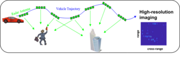 |
MIMO-SAR: A Hierarchical High-resolution Imaging Algorithm for mmWave FMCW Radar in Autonomous Driving
Xiangyu Gao, Sumit Roy, Guanbin Xing IEEE Transactions on Vehicular Technology, 2021 |
|
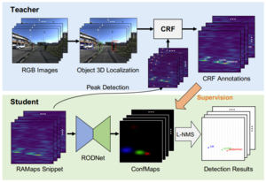 |
RODNet: Radar Object Detection Using Cross-Modal Supervision
Yizhou Wang, Zhongyu Jiang, Xiangyu Gao, Jenq-Neng Hwang, Guanbin Xing, Hui Liu IEEE/CVF Winter Conference on Applications of Computer Vision (WACV), 2021 pdf code |
|
|
Perception Through 2D-MIMO FMCW Automotive Radar Under Adverse Weather
Xiangyu Gao, Sumit Roy, Guanbin Xing, Sian Jin IEEE International Conference on Autonomous Systems (ICAS), 2021 |
|
|
Towards Millimeter-wave Radar Signal Processing and Learning-Based Applications
Xiangyu Gao General Exam Report, University of Washington, 2021 |
|
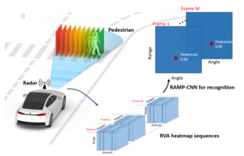 |
RAMP-CNN: A Novel Neural Network for Enhanced Automotive Radar Object Recognition
Xiangyu Gao, Guanbin Xing, Sumit Roy, Hui Liu IEEE Sensors Journal, 2020 pdf code |
|
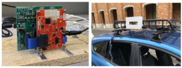 |
Experiments with mmWave Automotive Radar Test-bed
Xiangyu Gao, Guanbin Xing, Sumit Roy, Hui Liu 53rd Asilomar Conference on Signals, Systems, and Computers, 2019 pdf code |
|
|
Multi-Level Feature Transmission with Semantic Knowledge Base and Deep RL
Xiangyu Gao, Hao Yin, Yaping Sun, et al. Code for IEEE Internet of Things Journal 2024 code |
|
|
Joint Computing, Pushing, and Caching Optimization via Soft Actor-Critic
Xiangyu Gao, Yaping Sun, Hao Chen, Xiaodong Xu, Shuguang Cui Code for IEEE Internet of Things Journal 2023 code pdf |
|
|
Raw ADC Data of 77GHz MMWave radar for Automotive Object Detection
Xiangyu Gao, Youchen Luo, Guanbin Xing, Sumit Roy, Hui Liu IEEE DataPort 2022 download readme link |
|
|
Raw ADC Data of 2D-MIMO MMWave radar for Carry Object Detection
Xiangyu Gao, Youchen Luo, Guanbin Xing, Sumit Roy, Hui Liu IEEE DataPort 2022 download readme link |
|
|
Radar Multiple Perspective Object Detection
Xiangyu Gao, Guanbin Xing, Sumit Roy, Hui Liu Code for RAMP-CNN (IEEE Sensors Journal) 2020 pdf code sample data |
|
|
MmWave Radar Signal Processing and Micro-Doppler Based Object Recognition
Xiangyu Gao, Guanbin Xing, Sumit Roy, Hui Liu Code for Asilomar 2019 pdf code sample data |
Senior Software Engineer
Zoox, Bay Area, CA
Ph.D., Electrical & Computer Engineering
University of Washington, 2023
Follow @william_gxy
Google Scholar
GitHub
LinkedIn
Many thanks to David Jurgens and Tim Althoff for the site template/inspiration